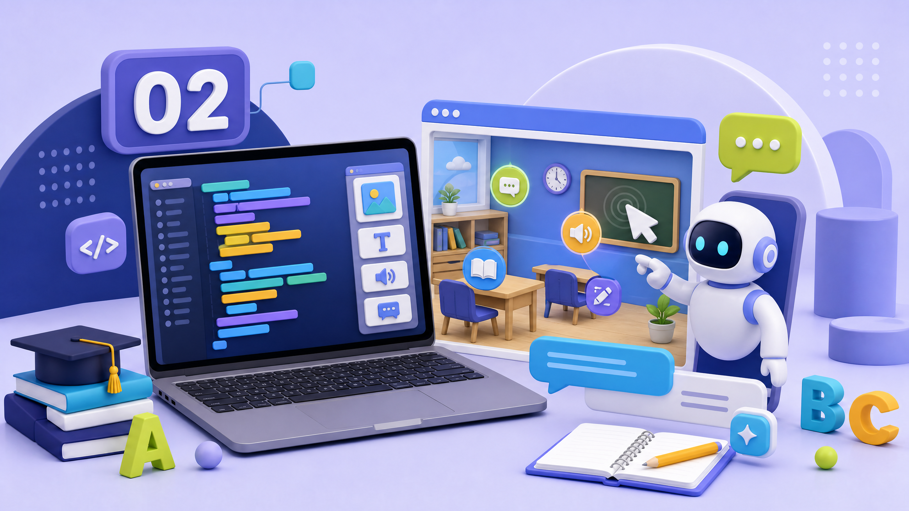
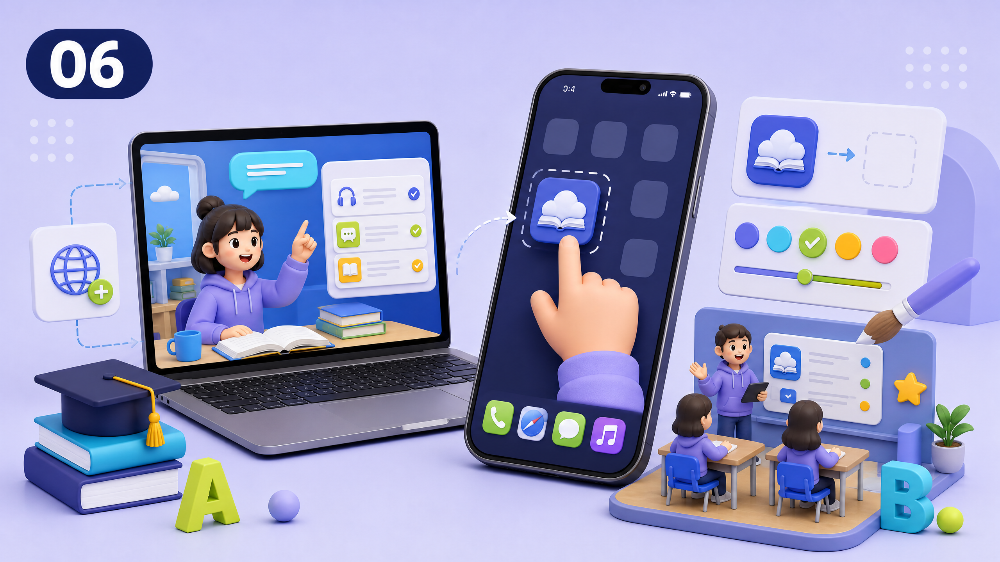
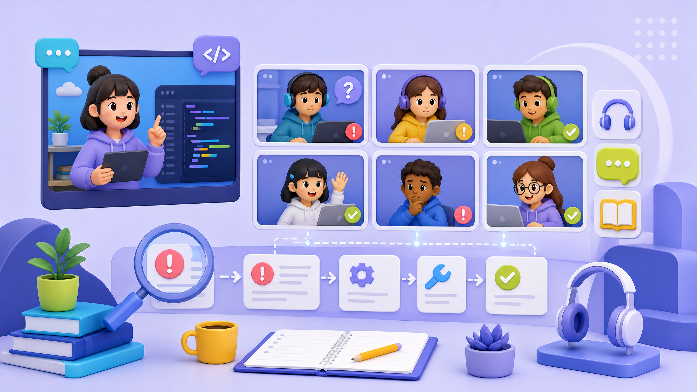

내 영어 학습앱을
직접 만들고 배포한다.
3D 공간에서 단어를 탐험하고 생활 문장을 복습하는 앱을 AI와 함께 구축한다. 계정 생성, 코드 생성, 배포, 클라우드 DB, 음성 재생, 스마트폰 설치까지 실제 결과물로 완주하는 수강생용 실습 강의안이다.
빠른 이동
8시간 안에 완성하는
실행 중심 타임라인
이 강의는 완성 화면을 먼저 확인한 뒤, 화면·데이터·동작·저장·배포 순서로 역설계한다. 비전문가는 체크포인트만 따라가고, 전문가는 각 챕터의 확장 과제를 선택한다.
| 차시 | 시간 | 핵심 결과 | 제출 증거 |
|---|---|---|---|
| 01 | 09:00–09:30 | 오리엔테이션과 완성 앱 이해 | 자신이 만들 장면·문장 한 줄 |
| 02 | 09:30–10:30 | 필수 계정·Node.js 준비 | 환경 점검표 |
| 03 | 10:30–12:30 | AI와 3D 웹앱 구축 | 로컬 실행 화면 |
| 점심 | 12:30–13:30 | 휴식과 오류 정리 | 질문 템플릿 제출 |
| 04 | 13:30–14:30 | 호스팅·온라인 배포 | 공개 URL |
| 05 | 14:30–15:30 | Supabase 학습 기록 | DB 행 1개 |
| 06 | 15:30–16:30 | Web Speech 발음 | 음성 재생 확인 |
| 07 | 16:30–17:30 | 모바일 설치·개인화·검수 | 홈 화면 캡처 |
| 08 | 17:30–18:00 | 발표·회고·다음 과제 | 1분 데모 |

실습 결과물의 전체 맥락. 홈페이지와 영어 학습앱 자료에서 사용한 3D 학습 시각 자료를 강의안의 도입부에 배치한다.
3D 장면 탐험 → 단어 카드 → 음성 재생 → 스마트폰 사용 흐름을 보여 주는 강의용 데모 영상.
수업 전에 막히는 지점을
먼저 없앤다.
100명 규모의 온라인 실습에서는 수업 시작 후 계정 생성 오류가 전체 흐름을 멈출 수 있다. 아래 점검은 수강 전날 완료하고, 오류가 해결되지 않아도 오류 템플릿을 작성해 제출한다.
| 증상 | 주요 원인 | 해결 순서 | 강사에게 보낼 정보 |
|---|---|---|---|
| Node 명령을 찾을 수 없음 | Node.js 미설치 또는 터미널 재시작 전 | Node.js 18.18 이상 설치 → 터미널을 완전히 닫고 재실행 → `node --version` 확인 | 운영체제와 버전 결과 |
| GitHub 로그인·인증 실패 | 이메일 인증 미완료, 다른 계정 로그인 | 메일함에서 인증 완료 → 시크릿 창에서 재로그인 → 계정명 확인 | 오류 문장, 개인정보를 가린 화면 |
| npm install이 멈춤 | 네트워크, 권한, 캐시, 백신 검사 | 프로젝트 폴더 확인 → `Ctrl+C` → 다시 실행 → 계속되면 npm 로그 마지막 20줄 제출 | 터미널 마지막 20줄 |
| 포트가 이미 사용 중 | 이전 개발 서버가 종료되지 않음 | 기존 터미널에서 `Ctrl+C` → 새 포트로 `npm run dev -- -p 3001` 실행 | 실행 명령과 표시된 포트 |
| Supabase URL·키 오류 | 공백, 따옴표, 잘못된 키, 환경 변수 미등록 | `.env.local` 이름 확인 → 값 앞뒤 공백 제거 → 서버 재시작 → 공개 키만 사용 | 키를 가린 환경 변수 이름과 오류 |
| 배포 화면이 404 | 저장소·브랜치·빌드 설정 불일치 | 배포 로그 확인 → `main` 브랜치와 루트 확인 → `npm run build` 로컬 통과 후 재배포 | 배포 URL과 로그 마지막 부분 |
| 음성이 나오지 않음 | 무음 모드, 브라우저 정책, 사용자 클릭 없이 실행 | 버튼을 직접 클릭 → 미디어 볼륨 확인 → Chrome·Safari에서 재시도 → HTTPS 확인 | 기기·브라우저·음성 버튼 상태 |
| 스마트폰에서 메뉴가 없음 | 인앱 브라우저에서 접속 | 공유 메뉴로 Safari 또는 Chrome에서 다시 열기 → 홈 화면에 추가 | iPhone/Android와 브라우저 |
오리엔테이션과 완성 앱 해부
챕터 01 시각 자료. 계정과 준비 환경을 먼저 확인하는 흐름.
완성 앱에서 교실·공항·카페·체크인 장면을 클릭하고 단어 카드와 문장 모드를 보여 준다.
자신이 만들고 싶은 장면과 문장 1개를 채팅에 남긴다.
바이브 코딩은 자연어 요구사항 → AI 생성 → 실행 → 검증의 반복이라고 설명한다.
앱의 사용자, 장면, 단어, 문장, 배포 결과를 워크시트에 적는다.
8차시 전체 목표와 제출 증거를 안내한다.
사전 준비 상태를 체크하고 미완료 항목을 표시한다.
필수 사이트 계정과 개발 환경 준비

챕터 02 시각 자료. AI와 대화하며 앱을 쪼개 만드는 작업 방식.
각 계정의 역할과 화면을 보여 주고 비밀번호·키를 화면 공유하지 않는 방법을 설명한다.
GitHub, AI 도구, 배포 서비스, Supabase 로그인 상태를 확인한다.
Node.js 설치, Chrome 업데이트, 터미널 열기 방법을 운영체제별로 시연한다.
node --version, npm --version 결과를 제출한다.명령어 없음, 권한 오류, 로그인 실패를 공통 화면으로 해결한다.
문제 발생 시 오류 템플릿으로 질문한다.
프로젝트 폴더와 프롬프트를 준비한다.
체크리스트 전 항목에 체크한다.
node --version npm --version mkdir english-explorer cd english-explorer
AI와 함께 3D 영어 웹앱 구축

챕터 03 시각 자료. 로컬 코드가 온라인 결과물로 이동하는 구조를 예고한다.
역할·목표·사용자·기술·기능·제약·검증 기준을 포함한 프롬프트를 작성한다.
자신의 장면과 생활 문장을 프롬프트에 입력한다.
Next.js·React 프로젝트와 장면 선택 UI를 생성한다.
npm install 후 개발 서버에서 제목과 버튼을 확인한다.scenes.ts와 sentences.ts의 타입과 배열 구조를 설명한다.4개 장면, 단어 21개, 문장 14개 중 하나를 직접 추가한다.
Three.js 모델, 카메라, 클릭 레이캐스팅을 단계별로 연결한다.
회전·확대·축소·사물 클릭·정보 패널을 검증한다.
AI 생성 코드의 오류를 함께 읽고 한 파일씩 수정한다.
로컬 실행 화면과 가장 어려웠던 오류를 제출한다.
역할: 초급자에게 설명하는 웹앱 개발 파트너 목표: 3D 장면 속 사물을 클릭해 영어 단어를 배우는 앱 기술: Next.js 14, React 18, TypeScript, Three.js, Tailwind CSS 기능: 교실·공항·카페·체크인, 단어 패널, 문장 카드, 반응형 제약: 예시 데이터로 먼저 실행하고 한 파일씩 수정 검증: 실행 명령과 예상 오류를 함께 설명
Hotspot 타입, Three.js 레이캐스팅, 상태 흐름, 컴포넌트 경계를 코드 리뷰한다.웹 호스팅과 온라인 배포

챕터 04 시각 자료. 다음 단계인 클라우드 DB 연결을 시각적으로 예고한다.
로컬 프로젝트, GitHub 저장소, 배포 서비스, 공개 주소의 관계를 설명한다.
저장소를 만들고 코드를 커밋한다.
npm run build와 배포 로그 읽는 법을 시연한다.빌드 오류가 있으면 마지막 수정 파일을 확인한다.
배포 서비스에서 저장소·브랜치·빌드 명령을 지정한다.
배포 URL을 열고 데스크톱·모바일 화면을 비교한다.
404, 이미지 경로, 환경 변수 문제를 점검한다.
공개 URL을 제출한다.
npm run build git add . git commit -m "학습 앱 첫 배포 준비" git push origin main
Supabase 클라우드 DB 연동

챕터 05 시각 자료. DB 기록과 음성 기능을 이어지는 학습 흐름으로 설명한다.
학습 항목, 유형, 학습 시각, 날짜 필드를 설명한다.
Supabase 프로젝트와 학습 기록 테이블을 만든다.
브라우저 공개 키와 관리자 비밀 키를 구분한다.
.env.local을 작성하고 서버를 재시작한다.단어 클릭·문장 완료 이벤트를 DB 함수에 연결한다.
학습 기록 하나를 저장하고 Table Editor에서 확인한다.
키 노출, 테이블 권한, 중복 기록을 확인한다.
키를 가린 DB 기록 화면을 제출한다.
NEXT_PUBLIC_SUPABASE_URL=https://프로젝트주소.supabase.co NEXT_PUBLIC_SUPABASE_ANON_KEY=브라우저용_공개키
NEXT_PUBLIC_ 변수에 넣거나 GitHub에 커밋하지 않는다.음성(TTS) API 통합

챕터 06 시각 자료. 데스크톱 앱을 스마트폰에서 다시 사용하는 흐름.
이번 실습은 별도 유료 키 없이 브라우저 내장 음성 합성을 사용한다고 설명한다.
영어 문장을 읽어 줄 버튼 위치를 정한다.
문장 취소, 언어 코드, 속도, 사용자 클릭 조건을 설명한다.
정보 패널과 문장 카드의 듣기 버튼을 연결한다.
브라우저·운영체제·음성 엔진별 차이를 안내한다.
Chrome과 스마트폰에서 발음 버튼을 각각 확인한다.
음성 미지원 환경에서도 텍스트가 남는지 확인한다.
음성 재생 확인을 표시한다.
export function speakEnglish(text: string) {
if (typeof window === 'undefined' || !('speechSynthesis' in window)) return;
window.speechSynthesis.cancel();
const utterance = new SpeechSynthesisUtterance(text);
utterance.lang = 'en-US';
utterance.rate = 0.88;
window.speechSynthesis.speak(utterance);
}스마트폰 설치·개인화·실습 검수

챕터 07 시각 자료. 100명 규모 온라인 수업에서 질문을 구조화하는 방식.
iPhone Safari와 Android Chrome에서 배포 URL을 여는 방법을 시연한다.
인앱 브라우저가 아니라 Safari·Chrome으로 주소를 연다.
공유 메뉴 또는 브라우저 메뉴에서 홈 화면 추가를 시연한다.
아이콘을 추가하고 다시 실행한다.
장면·단어·문장·색상 중 하나를 변경하고 검수 기준을 설명한다.
자신의 직업·취미에 맞는 단어 또는 문장을 추가한다.
화면·DB·음성·모바일·보안 체크리스트를 확인한다.
홈 화면과 앱 실행 캡처를 제출한다.
발표·회고·다음 기능 설계
챕터 08 시각 자료. 완성 결과를 공유하고 다음 학습으로 이어가는 장면.
앱 목적, 가장 잘 작동한 기능, 가장 어려웠던 오류, 다음 기능을 설명한다.
공개 URL과 모바일 화면을 준비한다.
8~10명 그룹별로 1분 데모를 진행한다.
앱의 한 기능을 직접 보여 준다.
바이브 코딩의 다음 실천 과제를 안내한다.
개선 아이디어 한 가지를 남긴다.
최종 제출 전
한 번에 검수한다.
| 검수 영역 | 통과 기준 | 문제 발생 시 |
|---|---|---|
| 3D 장면 | 장면 선택·카메라 확대·사물 클릭 작동 | 장면 데이터와 모델 위치를 먼저 확인 |
| 학습 콘텐츠 | 단어 21개·문장 14개가 자연스럽고 뜻이 맞음 | AI 결과를 원문과 대조하고 직접 수정 |
| DB | 학습 완료 후 날짜 기록 확인 | 환경 변수·테이블명·권한 점검 |
| 음성 | 버튼 클릭 후 영어 발음 재생 | 기기 볼륨·브라우저·사용자 동작 확인 |
| 배포 | 공개 HTTPS 주소와 모바일 접속 | 빌드 로그·브랜치·경로 확인 |
| 보안 | 키·비밀번호·개인정보 노출 없음 | 키 폐기·재발급·커밋 이력 점검 |
최종 제출물
공개 앱 URL, 저장소 URL, 데스크톱 실행 캡처, 스마트폰 홈 화면 캡처, Supabase 기록 확인 캡처를 제출한다. 홈페이지의 3D 영어 학습앱 사례와 강의용 이미지·영상을 함께 확인하려면 홈페이지 프로젝트 아카이브와 영어 학습앱 저장소를 연다.